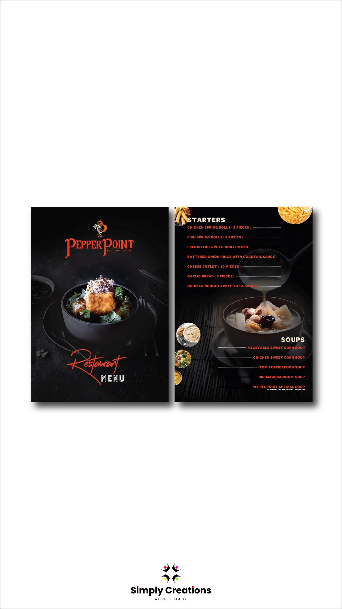
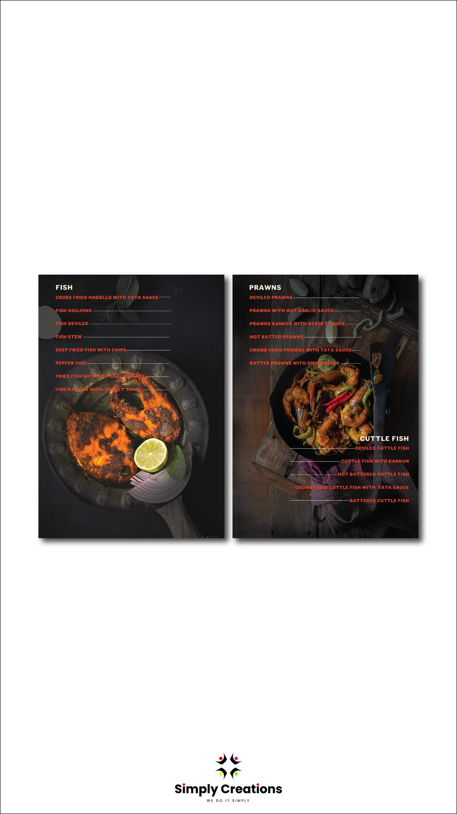
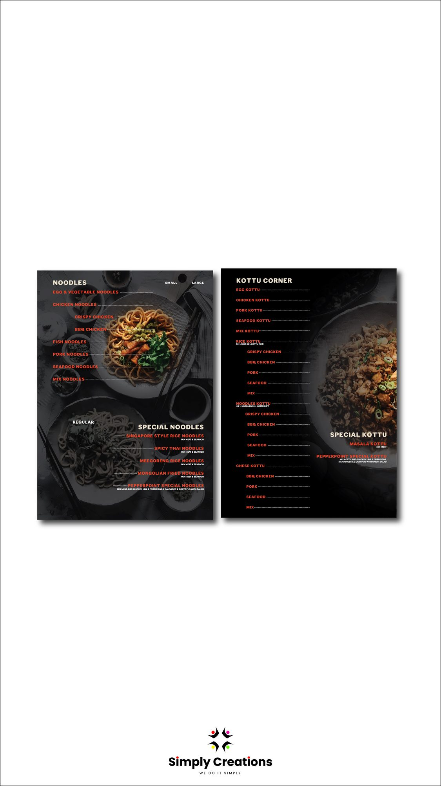
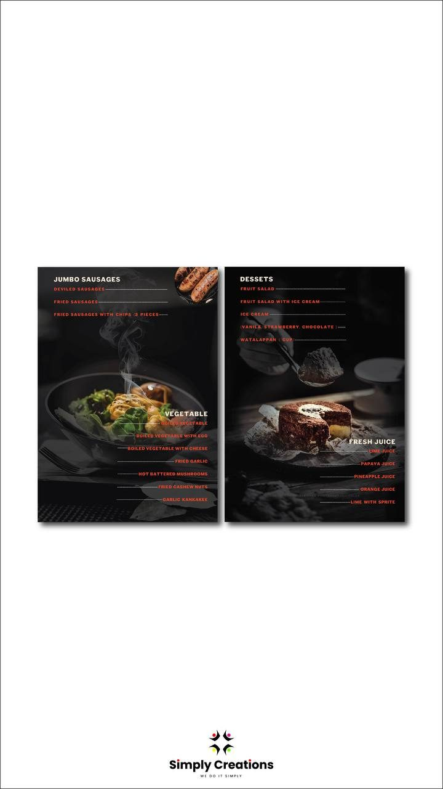
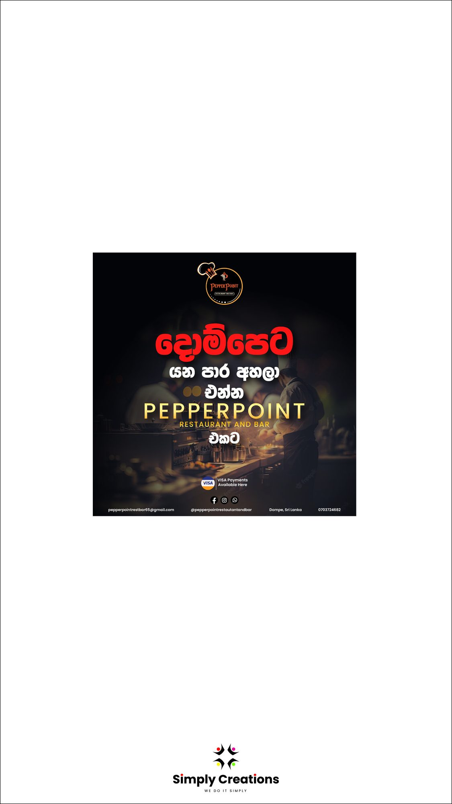
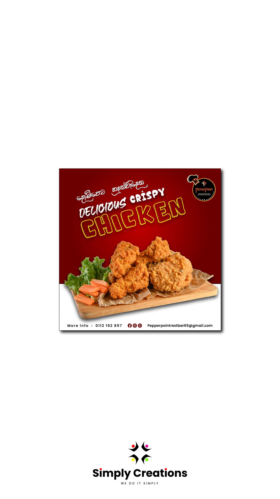
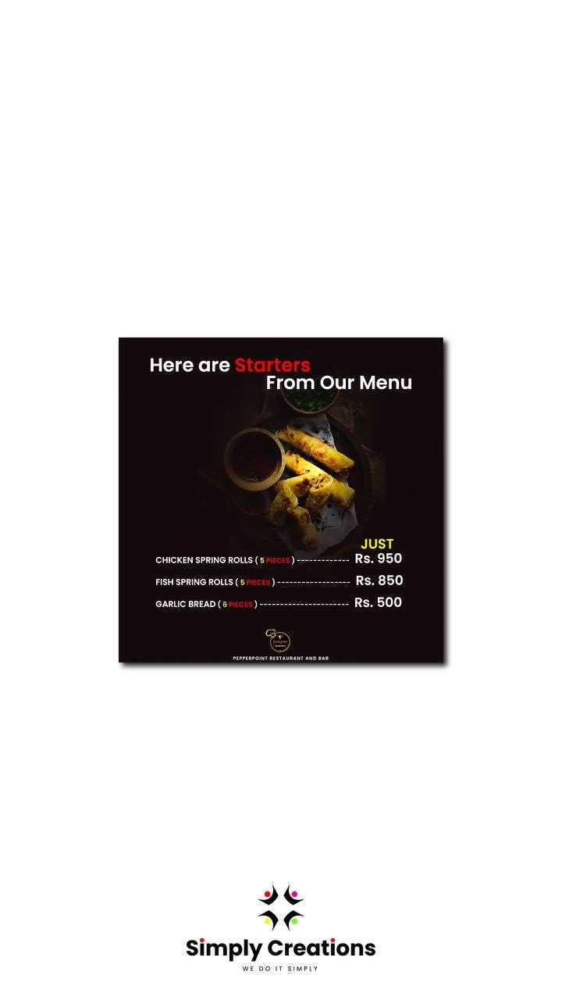
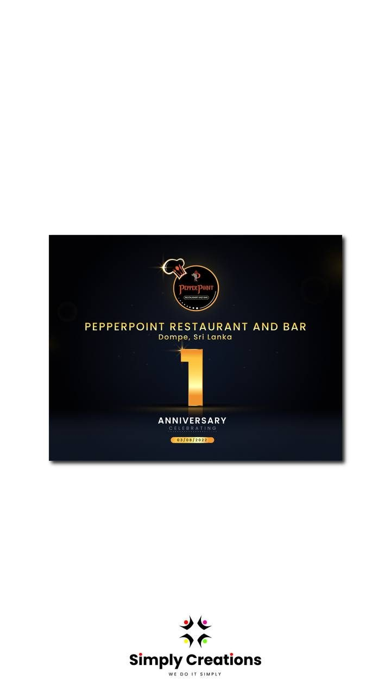

Case file · Print and social media
Pepperpoint
A menu, opening posts and social media for a restaurant and bar in Dompe, Sri Lanka.
- Project
- Menu and social media design
- Client
- Pepperpoint Restaurant and Bar, Dompe, Sri Lanka
- Studio
- Simply Creations
- Tools
- Adobe Photoshop, Adobe Illustrator
01The brief
Pepperpoint Restaurant and Bar needed a full menu and posts to announce its opening and promote its food to local guests in Sri Lanka.
02The approach
A dark, rich style with red and gold accents, so the food photos stand out. Some posts are in Sinhala, because the audience is Sri Lankan, and the same look runs through the menu and every post so the brand feels consistent.
Designed at Simply Creations (2021–2024), the minimalist design studio I founded with three students I trained at HCCPAS. Simple by design.
03The menu




04Opening and social posts



